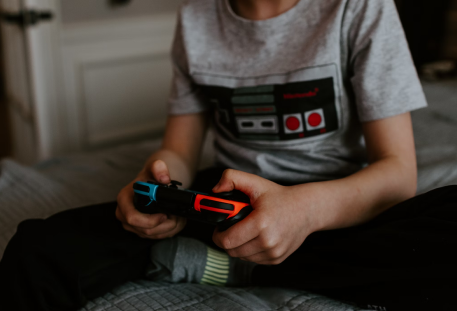

Diversão digital: Jogos online para Crianças e Adolescentes
Você já deve ter ouvido falar que jogar é uma das melhores partes da infância e adolescência. E, com o avanço da tecnologia, os jogos online se tornaram uma forma popular de diversão para crianças e adolescentes em todo o mundo. Neste artigo, vamos explorar o mundo dos jogos online, seus benefícios e como aproveitá-los com responsabilidade.
A magia dos Jogos Online
Os jogos online são uma forma emocionante de entretenimento digital. Eles variam de quebra-cabeças e jogos de estratégia a aventuras épicas em mundos virtuais. Alguns jogos permitem que você jogue com amigos ou faça novos amigos online, tornando-os uma maneira social de se divertir.
Benefícios dos Jogos Online
- Aprendizado Divertido: Muitos jogos desafiam a mente e incentivam a resolução de problemas, o que pode ser uma forma divertida de aprender novas habilidades.
- Trabalho em Equipe: Jogos online frequentemente envolvem trabalho em equipe, onde você pode aprender a colaborar com outros jogadores para alcançar objetivos em comum.
- Criatividade: Alguns jogos permitem que você crie e personalize personagens e ambientes, estimulando a criatividade.
- Habilidades Sociais: Ao jogar com amigos online, você desenvolve habilidades sociais, como comunicação e cooperação.
Cuidados necessários para Jogar Online com segurança
- Limite de Tempo: Estabeleça limites de tempo para jogar. É importante equilibrar os jogos com outras atividades, como estudar, fazer exercícios e socializar com amigos e familiares no mundo real.
- Classificação Etária: Verifique a classificação etária dos jogos para garantir que sejam adequados à sua idade. Essas classificações são fornecidas para ajudar os pais e os jogadores a escolherem jogos apropriados.
- Compartilhamento com os Pais ou Responsáveis: Mantenha seus pais ou responsáveis informados sobre os jogos que você joga. Eles podem ajudar a garantir que os jogos sejam apropriados e monitorar seu comportamento online.
- Proteja Suas Informações Pessoais: Nunca compartilhe informações pessoais, como seu nome completo, endereço, número de telefone ou informações de login com estranhos online. Se alguém pedir essas informações, informe um adulto de confiança imediatamente.
- Respeito Online: Trate os outros jogadores com respeito e empatia. Lembre-se de que existem pessoas reais por trás dos avatares e usernames. Evite fazer ou dizer coisas que você não faria pessoalmente.
- Segurança de Conta: Mantenha suas informações de login seguras. Use senhas fortes e evite compartilhá-las. Ative a autenticação de dois fatores, se disponível.
- Evite Compras In-Game sem Permissão: Se os jogos oferecem compras dentro do aplicativo, peça permissão aos seus pais antes de fazer qualquer compra.
Os riscos dos Jogos Onlines
- Conteúdo Inadequado: Alguns jogos podem conter conteúdo violento, sexualmente explícito ou inadequado para a idade da criança ou adolescente. É importante verificar as classificações etárias e as descrições dos jogos antes de permitir que os jovens joguem.
- Vício em Jogos: Jogos online, especialmente aqueles com elementos de recompensa e competição, podem se tornar viciantes. Isso pode levar a problemas de saúde mental, como ansiedade e depressão, bem como ao declínio no desempenho escolar e nas atividades sociais.
- Exposição a Estranhos: Jogar online frequentemente envolve interações com outros jogadores, alguns dos quais podem ser adultos ou pessoas desconhecidas. Isso pode expor as crianças e adolescentes a conversas inapropriadas, assédio ou tentativas de manipulação.
- Gastos In-Game: Alguns jogos oferecem compras dentro do aplicativo (microtransações) que podem levar a gastos excessivos e problemas financeiros se não forem monitorados. Crianças podem gastar dinheiro sem o consentimento dos pais.
- Privacidade e Segurança: Crianças e adolescentes podem inadvertidamente compartilhar informações pessoais, como nome, idade e localização, enquanto jogam online. Isso pode representar um risco à privacidade e à segurança.
- Cyberbullying: Assim como nas redes sociais, o cyberbullying pode ocorrer em jogos online, com jogadores hostis assediando ou difamando outros jogadores. Isso pode ter sérios efeitos emocionais e psicológicos nas vítimas.
- Excesso de Tempo de Tela: Jogar jogos online por longos períodos pode levar ao excesso de tempo de tela, o que pode impactar negativamente a saúde física e mental das crianças, como problemas de sono, obesidade e isolamento social.
- Segurança de Conta: Crianças e adolescentes podem ser alvos de hackers ou golpistas que tentam roubar informações de login ou contas de jogo. É importante que eles saibam como proteger suas informações de conta.
- Desinformação e Discurso de Ódio: Alguns jogos podem disseminar desinformação ou permitir a disseminação de discurso de ódio e intolerância, o que pode influenciar negativamente a visão de mundo dos jovens.
Para mitigar esses riscos, os pais e responsáveis devem estar envolvidos na vida digital de seus filhos. Isso inclui definir limites de tempo de jogo, verificar as classificações etárias, monitorar o comportamento online, ensinar sobre segurança online e estar disponível para discussões abertas sobre experiências online. É importante equilibrar o lazer digital com atividades offline e promover um ambiente online seguro e positivo para crianças e adolescentes.